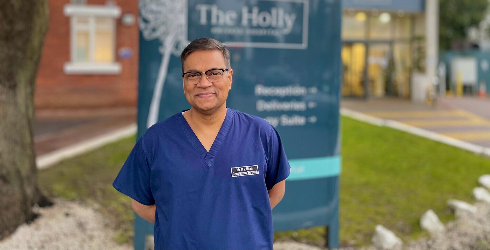

Marylebone, London W1
The Harley Street Clinic
35 Weymouth Street, London, W1G 8BJA short walk from Regent's Park, Great Portland Street and Oxford Circus stations, in the heart of London's historic medical district.
Consultant Oncoplastic Breast Surgeon · London & Essex
Mr Md Zaker Ullah FRCS has been a doctor since 1987 and leads the Breast Unit at Whipps Cross University Hospital. Privately, he sees patients on Harley Street, in the City and in Buckhurst Hill — from a first worrying lump through to cancer surgery and reconstruction.
The approach
Oncoplastic surgery means planning every operation twice — once for the cancer, and once for the person who lives with the result.

He introduced the one-stop breast clinic at Whipps Cross. Examination, imaging and biopsy are done together, so you are not left waiting weeks between appointments.
Trained at The Royal Marsden, St Mary's and The Royal Free. He combines complete removal of the cancer with plastic-surgical reshaping, reconstruction and symmetry.
The surgeon who examines you is the one who operates and follows you up. Every cancer case also goes to a full multidisciplinary team.
Treatments
Benign and malignant breast disease, oncoplastic and reconstructive surgery, men's breast health, and keyhole general surgery, all under one consultant.
Most breast symptoms turn out to be benign — but every new symptom deserves a proper answer, quickly.
02Surgery is usually the cornerstone of breast cancer treatment.
03Reconstruction restores the shape of the breast after cancer surgery — at the same operation or years later.
04Reduction mammoplasty reshapes heavy breasts to a lighter, higher, more comfortable form — for relief of symptoms, for proportion, or to balance the breasts after cancer surgery..
05Augmentation uses an implant to increase the size or restore the fullness of the breast.
06Fat grafting — lipofilling — moves a small amount of your own fat, harvested by gentle liposuction, into the breast to smooth contours, fill defects and soften scarred tissue..
07Enlargement of male breast tissue is common, benign in the vast majority of cases, and very treatable.
08Alongside his breast practice, Mr Ullah maintains a general surgical practice in laparoscopic — keyhole — surgery: gallbladder removal, hernia repair and appendicectomy..
Patient reviews
Mr Z Ullah is supremely the best surgeon. In him I trust completely and feel so lucky to have had him as my surgeon. His attention, professionalism and care is exemplary.
Thanks to Mr Ullah's care and skills - I am still here 3 years later… His kindness and compassion is everything a doctor should have.
He explains things thoroughly to you and takes the time to listen to patients, asking many questions and showing genuine concern. He never rushes his consultations and is a highly empathetic Doctor.
I have had two surgeries with dr ullah and both experiences have been stress free and easy recoveries with minimal scarring. I can honestly say I am in the best hands.
Had the greatest pleasure to meet Mr Ullah today and his amazing nurse Beverly. From the moment I sat down, i felt completely comfortable and in safe hands.
Mr. Ullah was patient and attentive to my needs. I am very happy with the reconstruction of my breast… A safe pair of hands.
Podcast · 14 October 2026
Recorded in front of a live audience, breast cancer survivor Rosie Fawehimi sits down with the surgeon who diagnosed her and later performed her double mastectomy and reconstruction — Mr Ullah — to answer the five questions she hears most.
 Everything Changed with Rosie Fawehimi · S3 E2
Everything Changed with Rosie Fawehimi · S3 E2Your first appointment
Most patients go home from their first visit either reassured or with a clear plan.
Call the private secretary or send an enquiry. If you are insured, ask your GP for a referral letter and get a pre-authorisation number from your insurer.
A full history and examination with Mr Ullah himself. There is time to talk, and nothing is rushed.
Ultrasound, mammogram and biopsy can be done at the same visit where needed. This is the gold-standard “triple assessment”.
You get results and a written plan. If you need surgery, the same surgeon who examined you performs it.
Clinics
He is fee-assured with the major UK insurers, and self-funding patients are equally welcome.
Marylebone, London W1
A short walk from Regent's Park, Great Portland Street and Oxford Circus stations, in the heart of London's historic medical district.
Smithfield, London EC1
Within the historic St Bartholomew's Hospital site, a few minutes from Farringdon, Barbican and St Paul's stations — easy to reach from the City, Canary Wharf and the Elizabeth line.
Buckhurst Hill, Essex IG9
On the High Road in Buckhurst Hill on the edge of Epping Forest, with on-site parking and Buckhurst Hill Central line station nearby. Easily reached from the M11 and M25.
NHS · Leytonstone, London E11
Mr Ullah is Clinical Lead of the Breast Unit at Whipps Cross, part of Barts Health NHS Trust. NHS referrals are made through your GP in the usual way.

About Mr Ullah
Mr Ullah trained in London’s teaching hospitals, including The Royal Marsden, St Mary’s and The Royal Free. He has been a consultant at Barts Health NHS Trust since 2012 and leads its breast unit at Whipps Cross. There he introduced the one-stop breast clinic and fat grafting for breast deformities.
He teaches the next generation of surgeons, directing the Whipps Cross Higher Surgery FRCS course. His keyhole hernia technique won best video at the European Association for Endoscopic Surgery. He consults in English and Bengali.
Insights
Plain-English guides to symptoms, diagnosis and treatment, written by Mr Ullah.
A lump behind the nipple in a man is usually gynaecomastia, but male breast cancer does occur. A breast surgeon explains causes, warning signs and tests.
Read articleSelf-funding patients can usually book a private breast surgeon directly. Insured patients normally need a GP referral. A consultant explains how it works.
Read articleA guide to the private Rapid Access Breast Clinic at Nuffield Health The Holly, Buckhurst Hill: booking, tests on the day, results and getting there.
Read articleFAQ
Patients with new breast symptoms are prioritised, and appointments can often be arranged within days. At The Holly, Mr Ullah runs a Rapid Access Breast Clinic on Tuesday afternoons, where examination, imaging and biopsy can happen at a single visit.
If you are using private medical insurance, most insurers ask for a GP referral before authorising a specialist appointment — check with your insurer first. Self-funding patients can usually book directly.
Mr Ullah is recognised by the major UK private medical insurers, including Bupa, Bupa Global, AXA Health, Aviva, Vitality, WPA, Cigna, Healix and Health-on-Line, and is fee-assured with the main insurers — so you should not face a shortfall for his fees.
At The Harley Street Clinic (London W1), Nuffield Health at St Bartholomew's (City of London, EC1) and Nuffield Health The Holly Hospital (Buckhurst Hill, Essex IG9). He also leads the NHS breast unit at Whipps Cross University Hospital.
It is a British surgical tradition. On gaining a fellowship of a Royal College of Surgeons, surgeons revert to Mr, Miss, Ms or Mrs — a mark of the surgical qualification itself. Mr Ullah holds the FRCSEd and the FRCS in General Surgery.
Yes. Mr Ullah assesses and treats male breast conditions, including gynaecomastia and new lumps in the male breast, as well as a full general surgical practice for hernias and gallstones.
Appointments
Private appointments on Harley Street, in the City of London and at The Holly in Buckhurst Hill, with priority for new breast symptoms. Insured and self-funding patients welcome.